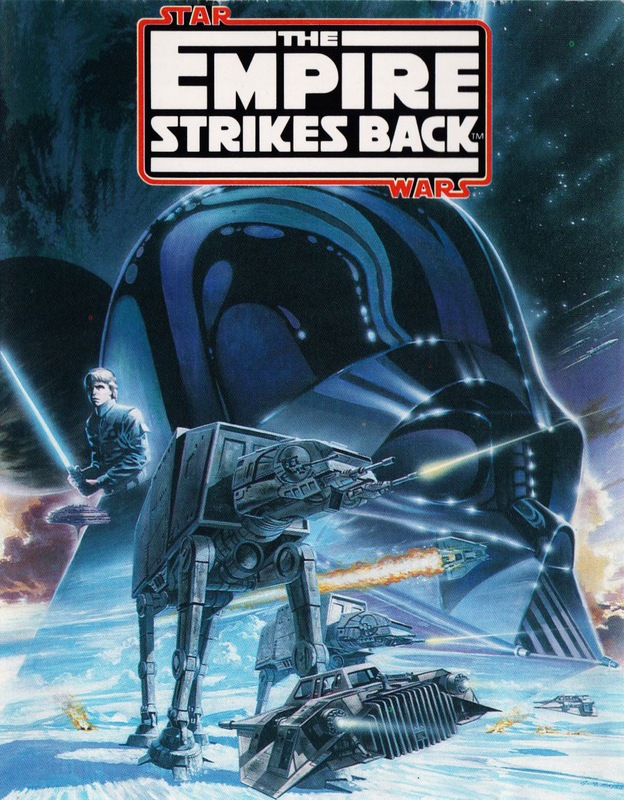
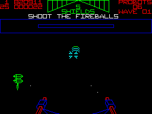
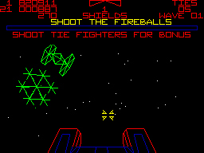
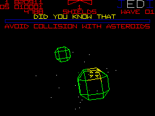

The Empire Strikes Back


{kind=link}

| Publisher: | Domark |
| Price: | £9.99 |
| Year: | 1988 |
| Source: | CRASH, Issue 54 |

The Dark Lord of the Sith, Darth Vader, has returned and only Luke Skywalker and his troup of brave rebels can stop him and his evil forces. The Empire Strikes Back is the sequel to Domark’s Star Wars which gained 84% in Issue 48.

power generator, as you concentrate on
annihilating a loose AT-ST
There are four levels in the game which broadly follow the plot of the film. The first level takes place on the surface of the planet Hoth, where the Empire has released hundreds of probots to search for the rebel hideout. The player takes the role of Luke Skywalker and must stop the probots from transmitting pictures of the rebels’ power generator to Darth Vader. The player’s aim is to shoot as many probots as possible and also to destroy their transmissions. The probots are not unarmed however and shoot fireballs at the player’s snowspeeder, partially destroying its shields on contact.
If Luke manages to survive this, he proceeds to the next level where he takes his snowspeeder across the planet’s surface to do battle with the Empire’s AT-AT (All-Terrain Armoured Transport) and AT-ST (All Terrain Scout Transport) walkers. The AT-ST walkers are small but fast, while the AT-ATs are very large and slow and can be ‘tripped up’ by firing tow cables at their legs.

For the third level the player takes the role of Han Solo in his Millennium Falcon against a swarm of TIE fighters. The enemy move quickly around the screen firing shots at the spaceship. Only if this is survived can the player progress to face the peril of the asteroid field which contains multitudes of deadly spinning boulders. These cannot be shot and must be avoided to reach the safety of the huge asteroid, at which the point the rebels’ mission starts all over again.
During the game, bonus points can be earned by destroying a specific number of enemy targets. Letters may also be awarded with the bonus points and if the player manages to spell out JEDI then for a limited time he becomes invincible against all enemies.
CRITICISM

belt
“The Empire Strikes Back is, of course, very much like its predecessor Star Wars, with fast vector graphics. The game is of the ‘blast everything in sight’ type and is full of mindless violence. The vector graphics move very smoothly and are surprisingly colourful. The way the walkers move is particularly good as they stride along, head turning. The gameplay is fast and furious with plenty of well-drawn, fast-moving enemies about. Of course, the game is not very original since there are plenty of wire-frame shoot ’em ups about, but it’s playable all the same. The various levels each provide a different challenge and add variety to the game. If you liked Star Wars then you should enjoy this.”
PHIL ... 90%
“Graphically The Empire Strikes Back is excellent — just like the arcade machine. All the aliens move smoothly and are well animated; there’s even a generous amount of colour in there too. You may think that it’s a waste of time to buy this if you already own games such as 3-D Starstrike, Starglider or Star Wars, but this does hold some new enemies and it is pretty fast. Besides the 3-D graphics in the game there’s also a picture of Luke Skywalker on the title screen, and when you start you have to wait while Darth Vader’s ship Executor passes by. The Empire Strikes Back is great fun if you’re a fan of this style of 3-D shoot ’em up, but with the lack of levels I don’t think it will have huge lasting appeal.”
NICK ... 90%
“Domark have, without a doubt, done the best job they could have. The Spectrum version has all the speed and playability of the all-too-rare arcade machine and is amazingly addictive. If you thought Star Wars was fun — and the graphics on that were pretty neat — then take a look at the latest in Domark’s trilogy; the walkers on the second stage are out of this world! Their movement is so realistic you’d think you were watching the film (well, almost). The speed is tremendous — especially on the first stage where you can really swoop around and dodge things just like on its arcade equivalent. And then there’s that great Star Wars soundtrack. Domark don’t produce many games, but they’re always memorable. Now, when’s Return of the Jedi coming out?”
PAUL ... 90%
COMMENTS
| Joysticks: | Cursor, Kempston, Sinclair |
| Graphics: | Superb representations of the arcade characters, all moving at break-neck speed |
| Sound: | Hip-hop Dave Whitaker Star Wars soundtrack (enhanced on the 128K machines), and in-game special effects |
| General rating: | Domark go from strength to strength. The Empire Strikes Back has all the speed, playability and graphics of the arcade machine. A must for all fans of the trilogy |
| Presentation: | 91% |
| Graphics: | 91% |
| Playability: | 90% |
| Addictive qualities: | 90% |
| Overall: | 90% |